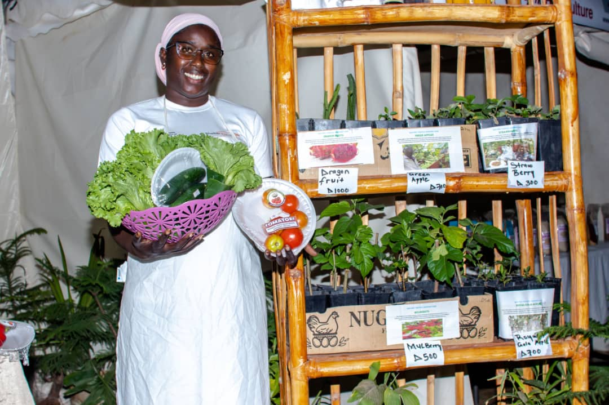
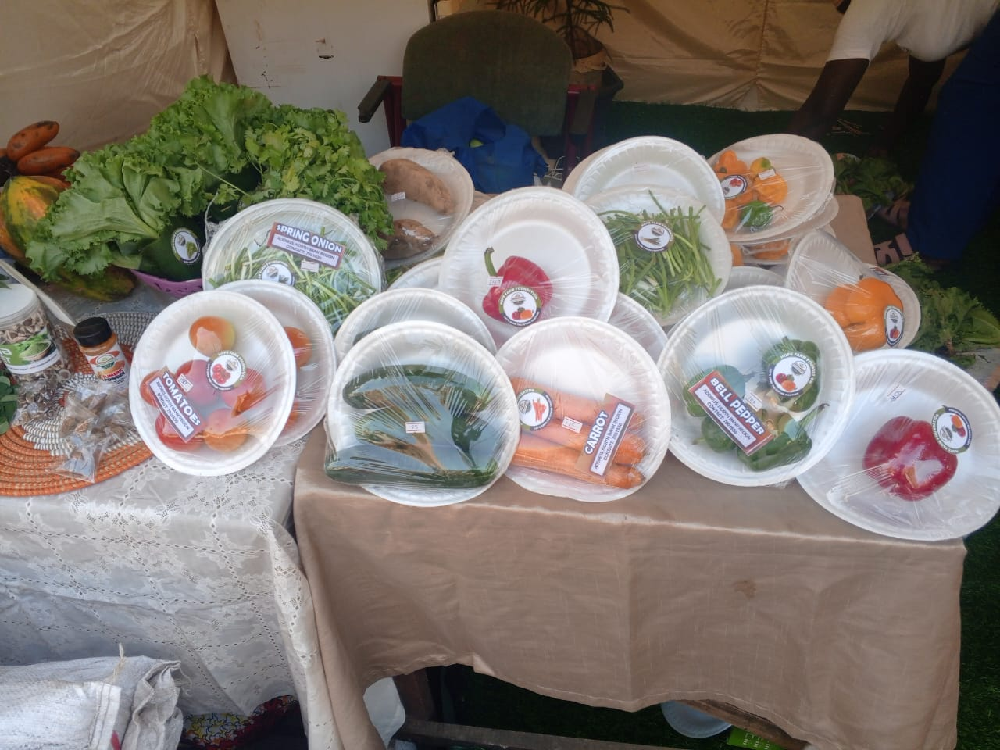
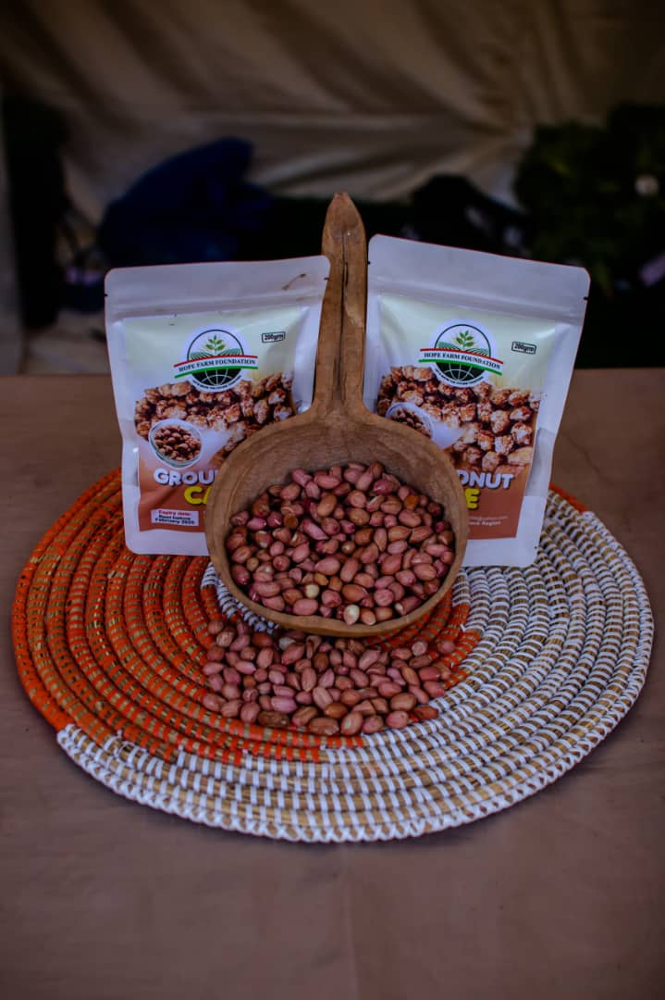
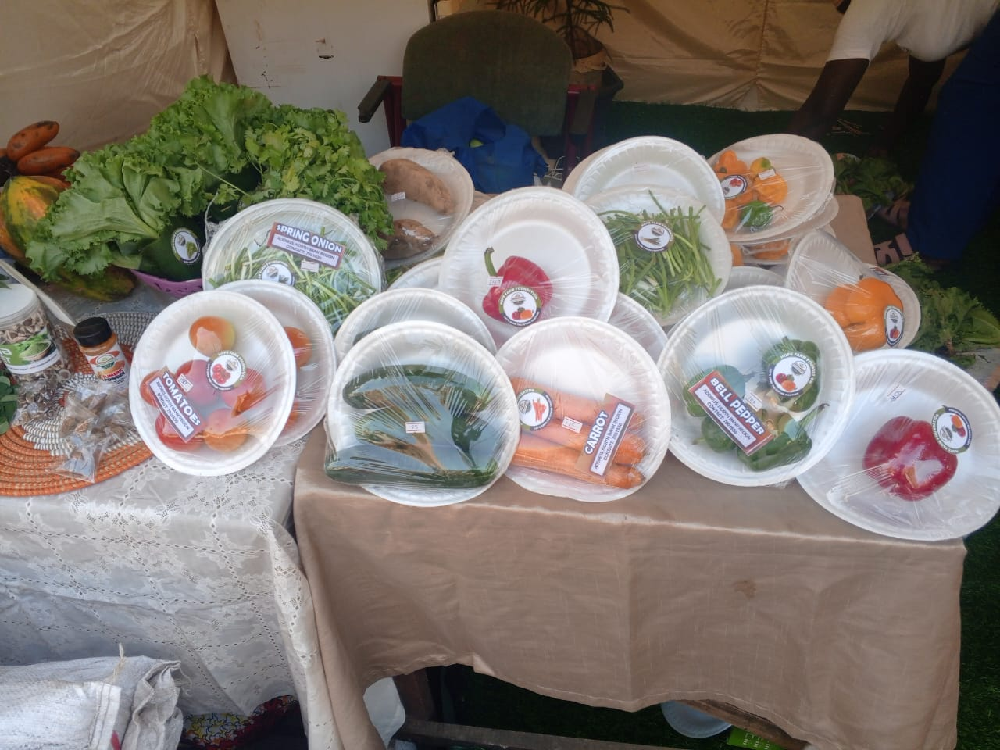
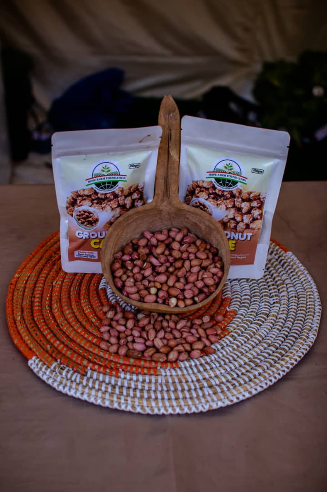
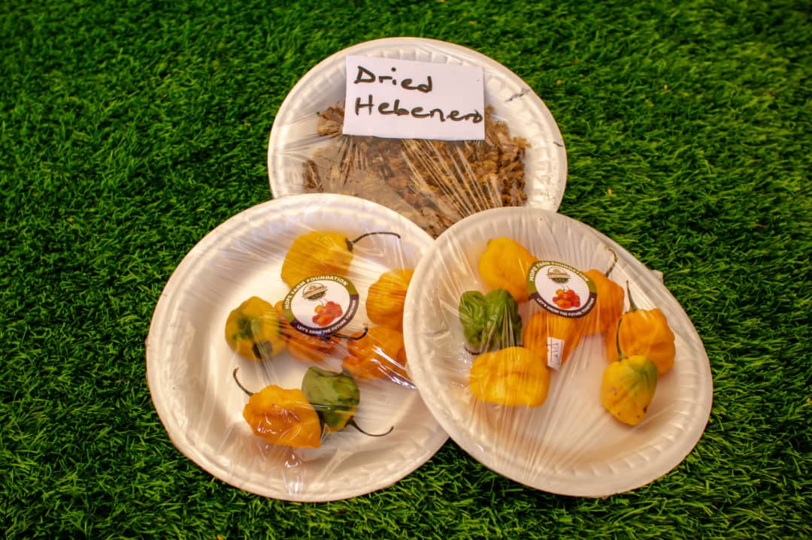
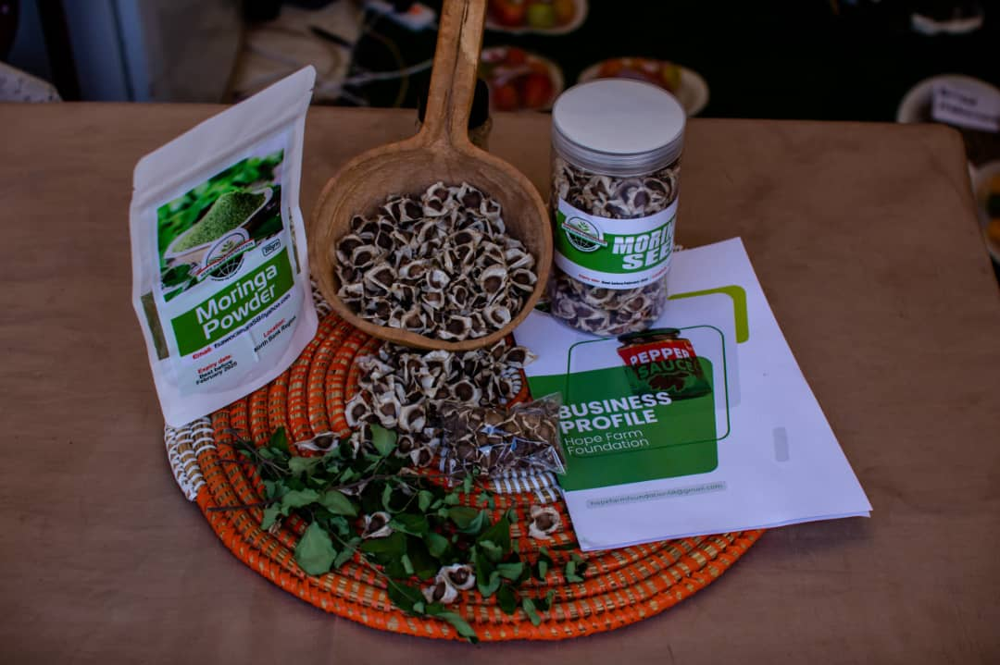
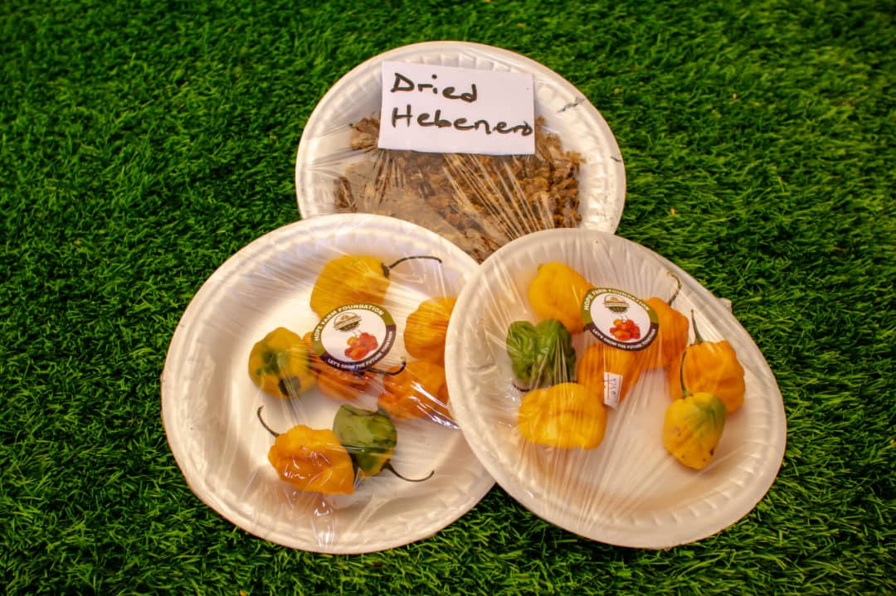
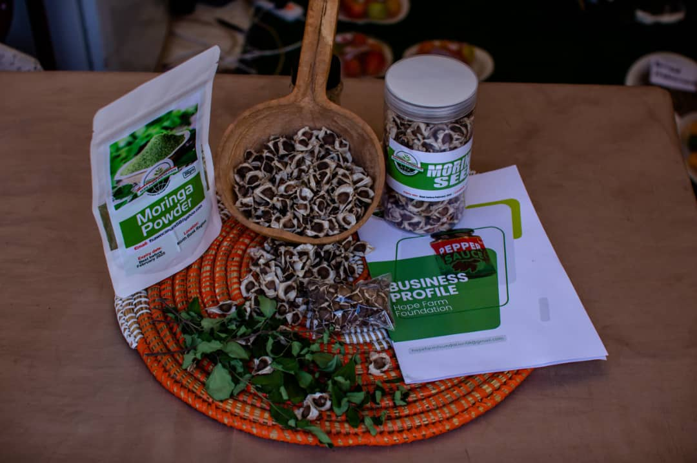

🌾 Farming Workshop
Past Project | 2024The Hope Farm Foundation Farming Workshop is a hands-on training program designed to empower local farmers, youth, and aspiring agripreneurs with modern and sustainable farming skills.
🌿 Grow One Million Trees
Ongoing Project | 2025The Grow One Million Trees Initiative is the flagship environmental program of the Hope Farm Foundation, designed to combat deforestation, restore degraded lands, and promote climate resilience across communities.

Green Village 2030
Future Project | 2030Our vision to create fully sustainable agricultural villages powered by innovation.

 



 


